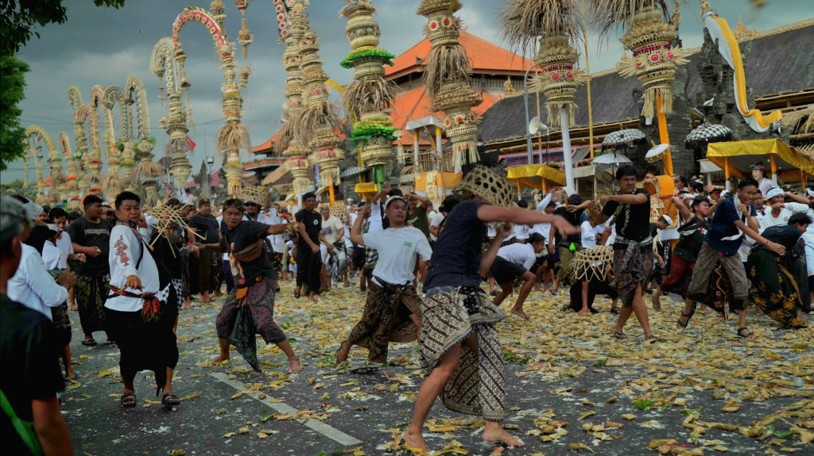
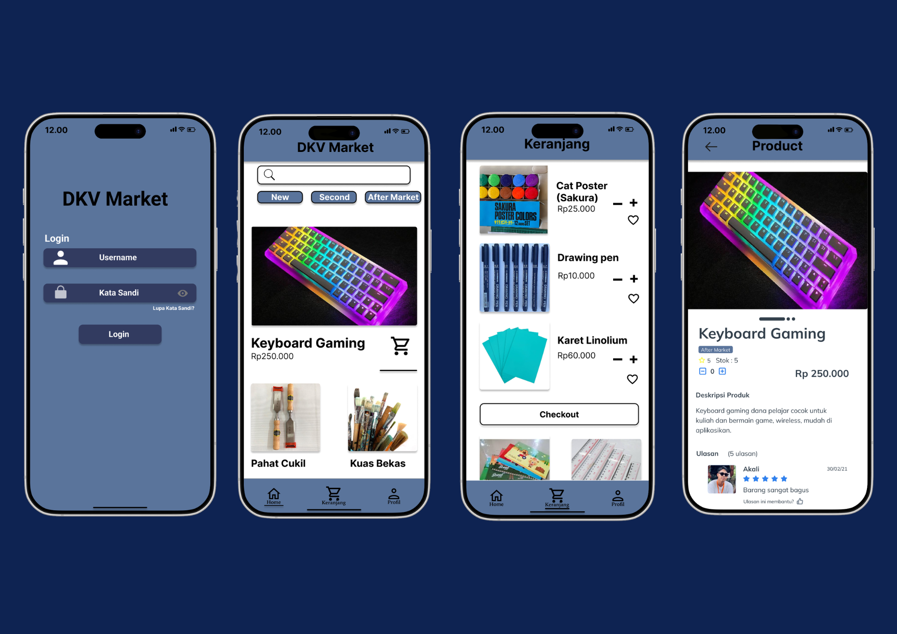

HELLO, I'M
Mahasiswa Sistem Informasi yang berfokus pada Web Development, UI/UX dan Graphic Design.
View ProjectsProjects
Skills
Years Learning
Passionate
Halo! Saya I Wayan Andika, mahasiswa Sistem Informasi yang memiliki ketertarikan pada Web Development, UI/UX Design, dan Graphic Design. Saya senang merancang serta mengembangkan solusi digital, saya percaya bahwa perpaduan antara teknologi dan desain dapat menghasilkan solusi digital yang menarik, mudah digunakan, dan memberikan dampak positif bagi penggunanya.
Technologies and creative tools I use to build modern digital experiences.


Blog peran teknologi terhadap budaya Bali berbasis HTML, CSS, dan JavaScript.
View ProjectAVI volunteer at Ubud Food Festival.
Mengerjakan berbagai project perkuliahan.
Let's turn ideas into meaningful digital experiences.